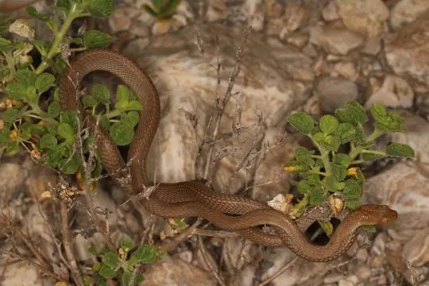
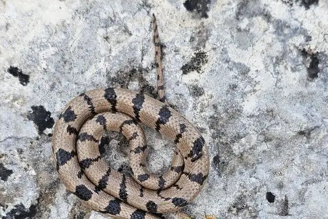
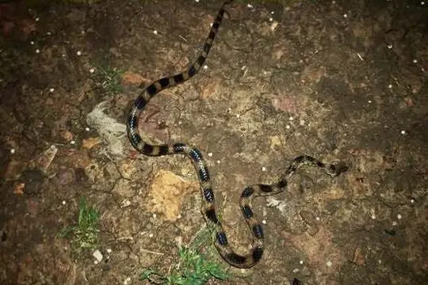
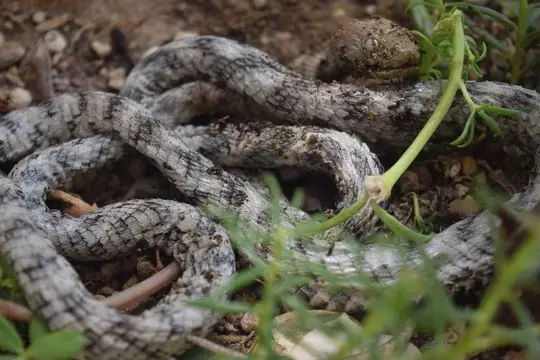
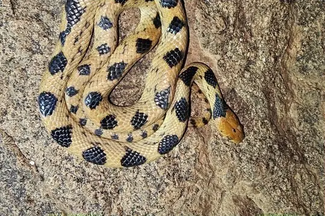
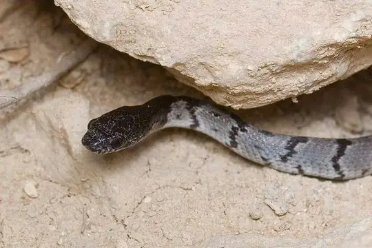
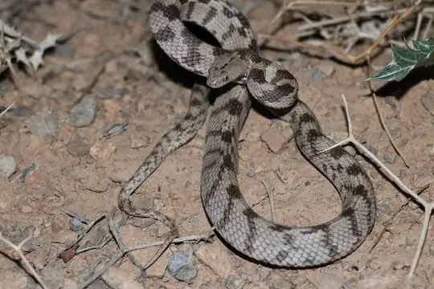

Telescopus
The genus Telescopus (family Colubridae) has 14 species in SnakeList (none venomous), recorded in 69 countries.
- 14species
- 14non-venomous
- 69countries
Species
Showing 14 species

Arabian Cat SnakeTelescopus dhara- No photo yetBeautiful Cat SnakeTelescopus pulcher

Black-headed Snake (nigriceps)Telescopus nigriceps
Blue Nile Cat SnakeTelescopus gezirae Cat SnakeTelescopus fallax
Cat SnakeTelescopus fallax- No photo yetDamara Tiger SnakeTelescopus finkeldeyi
 Egyptian CatsnakeTelescopus obtusus
Egyptian CatsnakeTelescopus obtusus
Indian Desert Tiger SnakeTelescopus rhinopoma
Karoo Tiger SnakeTelescopus beetzi North African CatsnakeTelescopus tripolitanus
North African CatsnakeTelescopus tripolitanus
Sinai catsnakeTelescopus hoogstraali
Soosan ViperTelescopus tessellatus Tiger Cat SnakeTelescopus semiannulatus
Tiger Cat SnakeTelescopus semiannulatus Variable Cat SnakeTelescopus variegatus
Variable Cat SnakeTelescopus variegatus
No snakes in Telescopus match.
About the genus Telescopus
- Family: Colubridae.
- Recorded in: Afghanistan, Albania, Algeria, Angola, Armenia, Azerbaijan, Benin, Botswana, Bulgaria, Burkina Faso, Burundi, Cameroon, Central African Republic, Chad, Croatia, Cyprus, Democratic Republic of the Congo, Egypt, Eritrea, Eswatini, Ethiopia, Gambia, Georgia, Ghana, Greece, Guinea, Guinea-Bissau, Iran, Iraq, Israel, Italy, Ivory Coast, Jordan, Kenya, Lebanon, Libya, Malawi, Mali, Malta, Mauritania. and 29 more